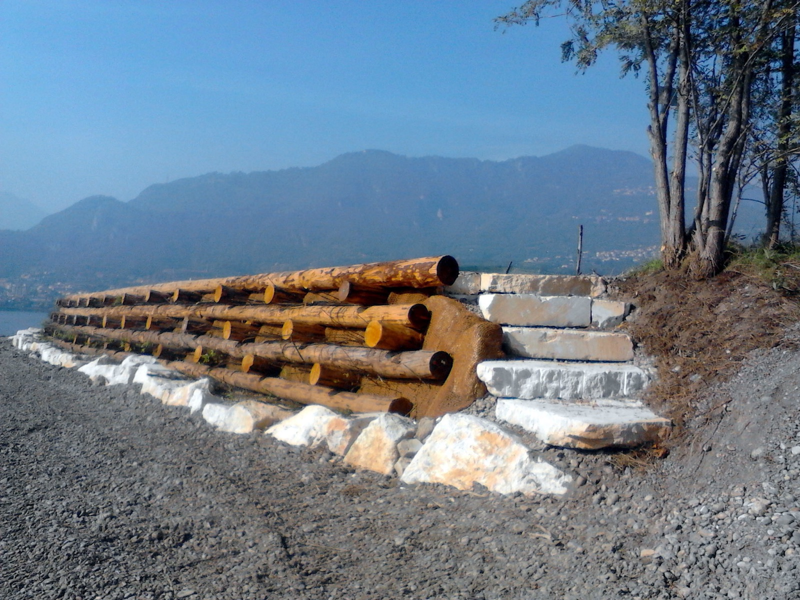

BLU Progetti
La società di ingegneria nata da GRAIA.
Dal maggio 2006 gli stessi soci di GRAIA hanno costituito BLU Progetti srl: progettazione e direzione lavori per soggetti pubblici e privati, nel campo della riqualificazione ecologica, ecosistemica e ambientale.

Cosa fa BLU Progetti
Dove GRAIA studia e monitora, BLU Progetti progetta e segue i cantieri. Le due società condividono soci, competenze e sede, e lavorano spesso sugli stessi progetti.
BLU Progetti è partner del progetto GE.RI.KO. MERA, finanziato dal Programma di cooperazione Interreg V-A Italia–Svizzera 2014–2020: una strategia comune tra i due Paesi per la gestione delle acque del bacino del Mera. Leggi il caso.
Le attività di BLU Progetti
Tredici servizi, dallo studio al cantiere.
- Gestione e conservazione di ambienti ed ecosistemi di alta quota
- Passaggi per pesci
- Gestione del sedimento negli invasi artificiali
- Fitodepurazione e lagunaggio
- Riqualificazione fluviale e lacustre
- Ingegneria naturalistica
- Acquacoltura – incubatoi ittici e allevamento
- Urban Runoff Management
- Modellistica ambientale
- Paesaggistica e progettazione del verde
- Studi di impatto sulla vegetazione
- Riqualificazione e rimboschimento forestale
- Gestione delle risorse forestali